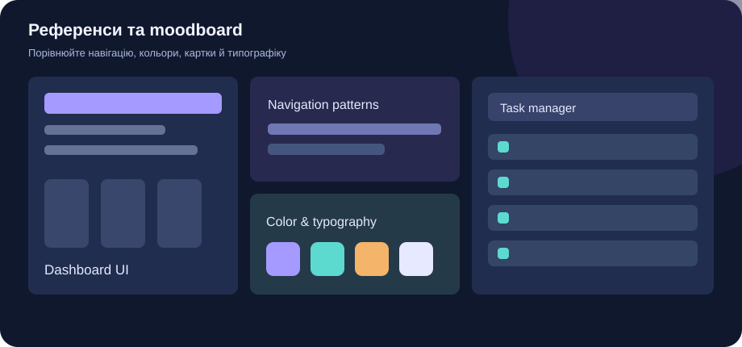
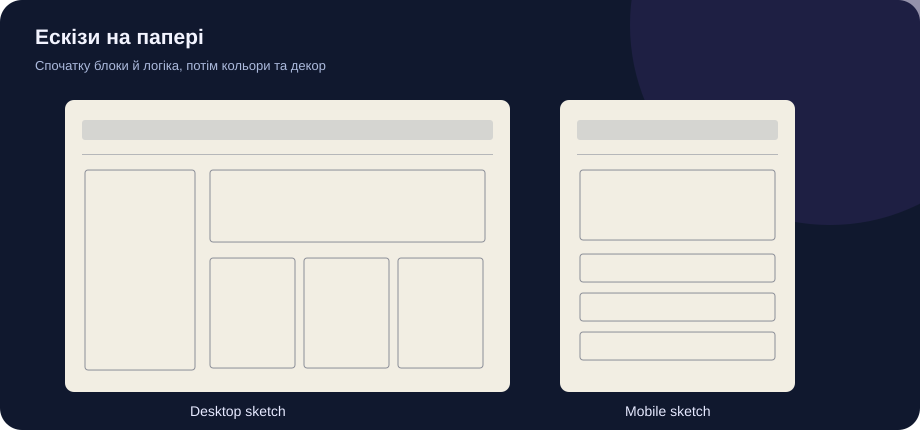
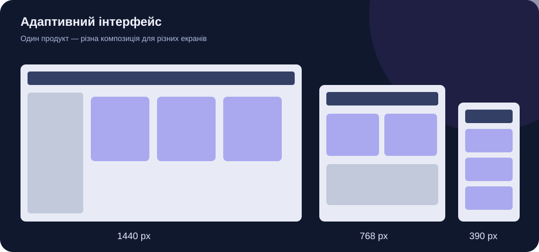
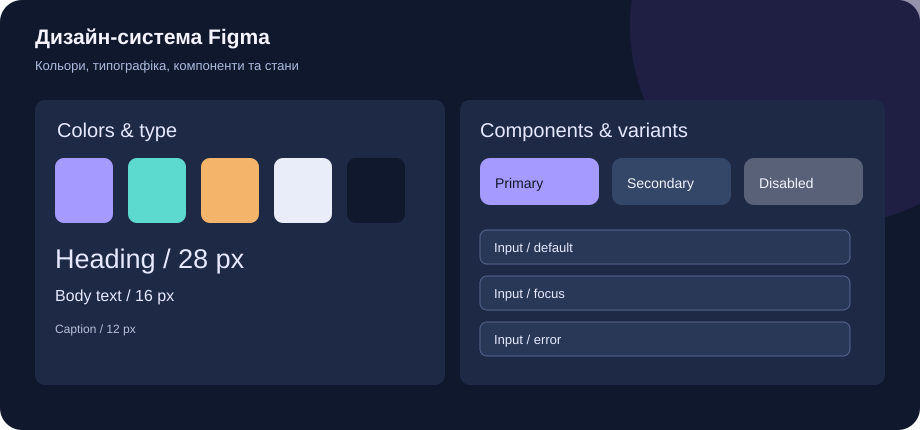
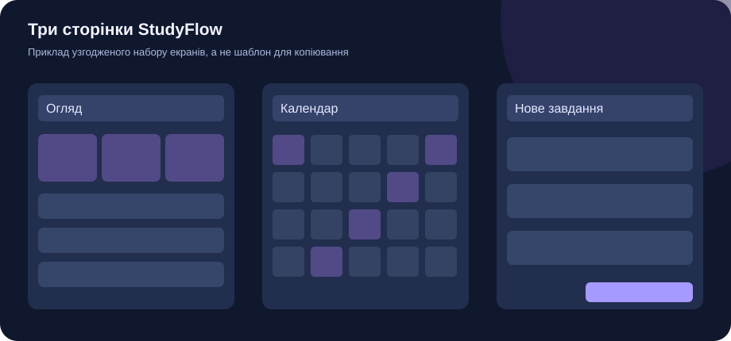

ПЕРШ НІЖ ПОЧАТИ
Спочатку — зміст. Потім — дизайн.
Не відкривайте Figma, доки не зможете коротко пояснити, кому потрібен ваш продукт, яку проблему він розв'язує та які дії користувач виконає в ньому. Результатом цього етапу буде не набір красивих картинок, а цілісна, перевірена система інтерфейсів.
01
ДОСЛІДЖЕННЯ · 1 УРОК
Оберіть ідею та сформулюйте проблему
Оберіть тему з каталогу або запропонуйте власну. Перевірте, чи продукт справді допомагає конкретним людям, а не просто повторює чужий сайт.
- Запишіть робочу назву продукту та його призначення одним реченням.
- Опишіть проблему, яку він вирішує, на конкретному прикладі.
- Визначте цільову аудиторію: хто ці люди та в якій ситуації вони користуватимуться продуктом.
- Сформулюйте три ключові функції, потрібні для розв'язання проблеми.
- Поясніть, чим ваше рішення відрізнятиметься від існуючих.
Приклад · StudyFlow
Проблема: учні не встигають виконувати завдання через невдале планування. Аудиторія: старшокласники. Рішення: календар завдань, пріоритети та автоматичне перенесення невиконаних справ.
Результат: паспорт ідеї обсягом до однієї сторінки.
02
АНАЛІЗ · 1 УРОК
Знайдіть та проаналізуйте референси

Знайдіть не менше п'яти прикладів інтерфейсів. Аналізуйте навігацію, компонування, типографіку, кольори та сценарії взаємодії. Не копіюйте чужі макети.
- Behance — дизайн-кейси
- Dribbble — інтерфейсні рішення
- Mobbin — сценарії застосунків
- Material Design — система компонентів
- Збережіть п'ять прикладів із посиланнями на джерела.
- Для кожного запишіть, яке рішення вам подобається і чому.
- Зазначте недоліки або обмеження кожного прикладу.
- Створіть у Figma сторінку
01 — Research & Moodboard. - Сформуйте власний напрям дизайну: характер, кольори, типографіка, візуальні принципи.
Результат: moodboard із п'ятьма референсами та коротким аналізом кожного.
03
ЕСКІЗУВАННЯ · 1 УРОК
Намалюйте структуру на папері

Візьміть аркуш та олівець. Поки що не обирайте кольори й шрифти: зосередьтеся на логіці сторінок.
- Оберіть три перші сторінки, потрібні для основного сценарію користувача.
- Намалюйте три ескізи для комп'ютера: шапка, навігація, основні блоки, форми та кнопки.
- Намалюйте три мобільні ескізи тих самих сторінок.
- Позначте стрілками, куди ведуть головні кнопки.
- Сфотографуйте ескізи та розмістіть на сторінці
02 — Paper Sketchesу Figma.
Результат: щонайменше шість паперових ескізів — три desktop і три mobile.
04
СТРУКТУРА · 1 УРОК
Створіть адаптивні wireframes

Перенесіть ескізи у Figma у вигляді низькодеталізованих макетів. Використовуйте прості прямокутники, текстові блоки й нейтральні кольори.
Desktop1440 px
Tablet768 px
Mobile390 px
Це стартові ширини фреймів для навчання, а не жорсткі межі всіх пристроїв.
- Створіть три wireframes для комп'ютера.
- Адаптуйте їх для планшета: перегляньте колонки, відступи та навігацію.
- Створіть мобільні версії: змініть компонування, а не просто зменште масштаб.
- Перевірте, чи зберігається головний користувацький сценарій на кожній ширині.
Результат: дев'ять wireframes на сторінці 03 — Wireframes.
05
СИСТЕМА · 2 УРОКИ
Створіть дизайн-систему та компоненти

На сторінці 04 — Design System створіть узгоджену систему стилів і компонентів, яку можна повторно використовувати в усіх макетах.
- Визначте основні, фонові, текстові й семантичні кольори. Перевірте контраст.
- Створіть стилі типографіки: заголовки, основний текст, підписи, кнопки.
- Визначте шкалу відступів, наприклад 4, 8, 12, 16, 24, 32 і 48 px.
- Створіть компоненти з Auto Layout: кнопка, поле введення, картка, навігація, бейдж, чекбокс.
- Об'єднайте стани компонентів у набори варіантів (Variants).
- Налаштуйте властивості компонентів та перевірте, що зміни в основному компоненті відображаються в екземплярах.
| Компонент | Варіанти |
|---|---|
| Button | Primary / Secondary / Disabled |
| Input | Default / Focus / Error |
| Card | Default / Hover |
| Navigation | Desktop / Mobile |
| Badge | Success / Warning / Error |
| Checkbox | Checked / Unchecked |
Результат: власна дизайн-система та щонайменше шість наборів компонентів із варіантами.
06
ВІЗУАЛЬНИЙ ДИЗАЙН · 2–3 УРОКИ
Оформіть три перші сторінки

Перетворіть wireframes на повноцінні макети. Використовуйте лише компоненти, стилі й правила, визначені у власній дизайн-системі.
- Завершіть три сторінки для комп'ютера.
- Замініть випадкові заповнювачі реалістичними демонстраційними даними.
- Адаптуйте кожну сторінку для планшета.
- Підготуйте мобільні версії з продуманою навігацією.
- Перевірте читабельність, контраст, візуальну ієрархію, відступи та узгодженість компонентів.
- Розмістіть макети на сторінках
05 — Desktop,06 — Tablet,07 — Mobile.
Приклад для StudyFlow
Сторінка 1 — огляд навчальних завдань; сторінка 2 — календар; сторінка 3 — створення нового завдання. Для кожної сторінки створіть desktop, tablet і mobile версії.
Результат: дев'ять завершених дизайн-макетів — по три для кожного пристрою.
07
ПЕРЕВІРКА · 1 УРОК
Зберіть та протестуйте прототип
- У вкладці Prototype налаштуйте переходи між трьома сторінками.
- Переконайтеся, що головні кнопки ведуть у відповідні екрани.
- Сформулюйте одне практичне завдання для тестувальника.
- Запропонуйте однокласнику виконати його без ваших підказок.
- Запишіть щонайменше два спостереження або проблеми.
- Внесіть виправлення й перевірте сценарій повторно.
Результат: посилання на інтерактивний прототип і короткий звіт про тестування.
КОНТРОЛЬ ЯКОСТІ
Що потрібно здати
Позначайте готові результати. Чекліст допомагає перевірити повноту роботи, але не замінює здавання завдання в Moodle.
КРИТЕРІЇ
Оцінювання · 12 балів
| Критерій | Максимум |
|---|---|
| Ідея та аналіз референсів | 2 |
| Ескізи та логіка структури | 2 |
| Адаптивні wireframes | 2 |
| Дизайн-система, компоненти, варіанти | 3 |
| Три оформлені сторінки | 2 |
| Прототип і тестування | 1 |
| Разом | 12 |
Це запропонована рубрика для практичної роботи. Учитель може уточнити критерії в Moodle до початку оцінювання.
ОРГАНІЗАЦІЯ
Структура файлу Figma
- 01 — Research & Moodboard
- 02 — Paper Sketches
- 03 — Wireframes
- 04 — Design System
- 05 — Desktop
- 06 — Tablet
- 07 — Mobile
- 08 — Prototype & Testing
Називайте фрейми, шари й компоненти зрозуміло. Усі матеріали мають бути впорядковані, а посилання на Figma — відкриватися в режимі перегляду для вчителя.
ФІНІШ
Як здати роботу
- Перевірте всі пункти чекліста.
- Відкрийте доступ до файлу Figma для перегляду.
- Скопіюйте посилання на файл і на інтерактивний прототип.
- У Moodle відкрийте завдання «Етап 1. UI/UX-дизайн» та надішліть посилання й короткий звіт відповідно до вимог учителя.
Ця сторінка не надсилає результати до Moodle автоматично.